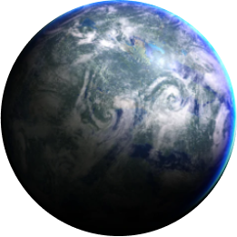
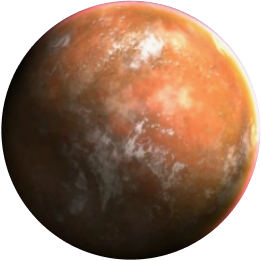

Выбери сторону
Тайтон
планета зарождения
Джедаи
Описание
Воины светлой стороны силы. Использут, преимущественно, мечи синего или зеленого цвета. Разивают свой разум и подавляют эмоции.
Описание
Светлая сторона силы, позволяет джедаям использовать способности контроля и защит. Джедаи почти не используют атакующие способности. Обладают даром внушения. На поле боя джедаи спокойны и собраны. Самые величайшие джедаи в истории были способны были останавливать катаклизмы на планетах и даже исцелять болезни
Корибан
планета зарождения
Ситхи
Описание
Воины темной стороны силы. Используют красные или оарнжевые мечи. Концентрируются на максимизации своей эмоциональной энергии.
Описание
Темная сторона силы открывает для воина огромный спектр атакующих способностей. В бою ситх может перейти в состояние ярости и стать почти невоспримчивым к урону даже от других сильных джедаев. Самые мощные ситхи могут метать молнии из рук, концетрируя в них свою ярость. А величайшие из них могли поглощать энергию планет чтобы усилить себя. Известны случаи переселения своего сознания ситхами и обретение бессмертия.